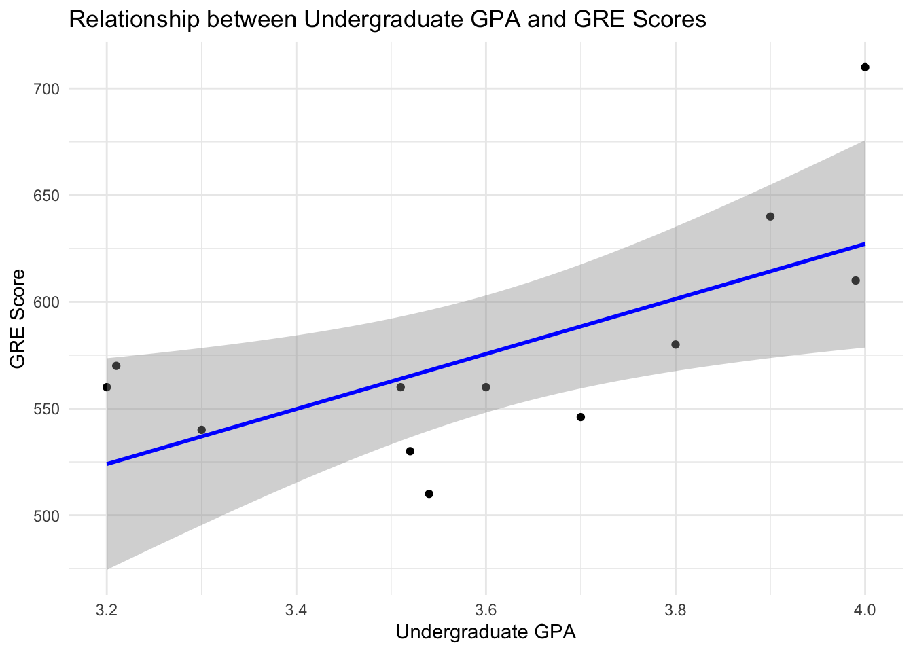

Counting and Non-Parametric Statistics are essential when you either have categorical data for both predictors and response variables OR your data that you wanted to use a parametric approach (correlation, regression, ANOVA) is not well-behaved and will continue to conform to the assumptions of those models (e.g., normality, homoscedasticity, etc.).
This assignment covers the materials in the lecture on Counting Statistics & Other Non-Parametric Approaches. As is expected, answer this using a Quarto document, push it to your repository, and turn in the URL.
Student Learning Objectives
At the end of this topic, you should be able to:
Identify specific non-parametric approaches that could be used based on the kind of data being presented.
Perform appropriate non-parametric analyses given the raw data.
Communicate the results of non-parametric analyses.
Questions
For each of the following questions, please provide your analysis and an interpretation (e.g., written as you would in a scientific publication). If it helps to describe your result, add tables or figures to help make your case. For every case, explain why you chose the particular analysis you did and demonstrate the reasons from the data.
The FDA has suggested a change in a medication that has been shown to have detrimental side effects in half of the patients. A clinical trial was conducted with nineteen patients; only three reported side effects. Did the change make a significant difference?
# Number of patients reporting side effectsreported_side_effects <-3# Total number of patients in the trialtotal_patients <-19# Hypothesized proportion under the null (FDA baseline)null_proportion <-0.5# Perform a binomial testbinom_test <-binom.test(reported_side_effects, total_patients, p = null_proportion, alternative ="less")# Print the resultbinom_test
Exact binomial test
data: reported_side_effects and total_patients
number of successes = 3, number of trials = 19, p-value = 0.002213
alternative hypothesis: true probability of success is less than 0.5
95 percent confidence interval:
0.0000000 0.3594256
sample estimates:
probability of success
0.1578947
Background: The FDA proposed changes to a medication due to reports of side effects in 50% of patients. A clinical trial was conducted with 19 patients to determine whether the changes significantly reduced side effects.
Methods: An exact binomial test was performed to compare the observed proportion of side effects (15.8%) against the baseline (50%). A one-sided alternative hypothesis was tested: that the true proportion of side effects is less than 50%.
Results: The results indicated that only 3 of 19 patients (15.8%) reported side effects. The exact binomial test yielded a p-value of 0.002213, demonstrating a statistically significant reduction in side effects compared to the baseline (95% CI: 0%–35.9%). These findings provide strong evidence that the changes to the medication significantly reduced the prevalence of side effects.
Conclusion: The proposed changes to the medication substantially lowered the proportion of patients experiencing side effects. Future studies with larger sample sizes are recommended to confirm these findings.
Reasoning: The binomial test is appropriate because the data represents the number of successes (patients reporting side effects) in a fixed number of trials (total patients), and you’re comparing the observed success rate against a hypothesized proportion.
Two different environmental remediation treatments are evaluated for the impacts on turbidity (measured using the Nephelometric Turbidity Unit or NTU). For regulatory reasons, turbidity is binned into four groups based on NTU: 0-15 ntu, 16-22 ntu, 23-30 ntu, and 31+ ntu. Do both treatments have the same impact on turbidity? Explain.
# Create NTU bins in the datasetturb <- turb %>%mutate(NTU_bin =case_when( NTU >=0& NTU <=15~"0-15", NTU >=16& NTU <=22~"16-22", NTU >=23& NTU <=30~"23-30", NTU >=31~"31+" ))# Check the new columnhead(turb)
# A tibble: 6 × 3
Treatment NTU NTU_bin
<chr> <dbl> <chr>
1 Treatment A 8.70 0-15
2 Treatment A 13.7 0-15
3 Treatment A 2.37 0-15
4 Treatment A 2.32 0-15
5 Treatment A 10.4 0-15
6 Treatment A 4.53 0-15
# Create a contingency table of Treatment vs. NTU_bincontingency_table <- turb %>%count(Treatment, NTU_bin) %>%pivot_wider(names_from = NTU_bin, values_from = n, values_fill =0) %>%column_to_rownames("Treatment")# Perform a chi-squared testchi_test <-chisq.test(contingency_table)
Warning in chisq.test(contingency_table): Chi-squared approximation may be
incorrect
# Bar plot for visualizationturb %>%count(Treatment, NTU_bin) %>%ggplot(aes(x = NTU_bin, y = n, fill = Treatment)) +geom_bar(stat ="identity", position ="dodge") +labs(title ="Distribution of NTU Bins by Treatment",x ="NTU Bins",y ="Count",fill ="Treatment" ) +theme_minimal()
Background: Two environmental remediation treatments were tested for their impact on turbidity, binned into four categories (0-15 NTU, 16-22 NTU, 23-30 NTU, and 31+ NTU). A Pearson’s chi-squared test was used to evaluate whether the treatments produced different distributions of turbidity levels.
Methods: The turbidity data were categorized into bins, and a contingency table was constructed showing the counts of samples in each NTU bin for both treatments. A Pearson’s chi-squared test was performed to assess whether the distributions of turbidity levels differed significantly between the two treatments.
Results: The chi-squared test revealed significant differences between the treatments \(\chi^2 = 17.582, \, df = 4, \, p = 0.001489\). This indicates that the two treatments do not have the same impact on turbidity. Treatment 1 had a higher proportion of samples in the 0-15 NTU bin, while Treatment 2 showed more samples in the higher NTU bins (Figure 1).
Conclusion: The significant differences in NTU distributions between treatments suggest that the two treatments have distinct effects on turbidity. Treatment 1 appears more effective at reducing turbidity than Treatment 2.
Reasoning: Since the distribution of turbidity levels (binned into categories) between two treatments is being compared, the chi-squared test is an appropriate choice. This test evaluates whether the frequencies of different turbidity levels differ significantly between the two treatments.
A dozen graduate students tried to determine if there was a relationship between their undergraduate GPA and their scores on the Graduate Records Examination. Look at these data and determine the extent to which they are related. Explain.
# Perform linear regressionmodel <-lm(GRE ~ GPA, data = grad)# Summary of the modelsummary(model)
Call:
lm(formula = GRE ~ GPA, data = grad)
Residuals:
Min 1Q Median 3Q Max
-57.842 -24.848 -9.777 28.297 82.827
Coefficients:
Estimate Std. Error t value Pr(>|t|)
(Intercept) 111.25 165.16 0.674 0.516
GPA 128.98 45.68 2.824 0.018 *
---
Signif. codes: 0 '***' 0.001 '**' 0.01 '*' 0.05 '.' 0.1 ' ' 1
Residual standard error: 42.65 on 10 degrees of freedom
Multiple R-squared: 0.4436, Adjusted R-squared: 0.388
F-statistic: 7.974 on 1 and 10 DF, p-value: 0.01804
# Scatter plot with regression lineggplot(grad, aes(x = GPA, y = GRE)) +geom_point() +geom_smooth(method ="lm", se =TRUE, color ="blue") +labs(title ="Relationship between Undergraduate GPA and GRE Scores",x ="Undergraduate GPA",y ="GRE Score" ) +theme_minimal()
`geom_smooth()` using formula = 'y ~ x'

Background: This study investigated the relationship between undergraduate GPA and GRE scores for a sample of 12 graduate students. The aim was to assess whether undergraduate GPA significantly predicts GRE performance.
Methods: The relationship between GPA and GRE was evaluated using Pearson correlation and linear regression. The correlation coefficient measured the strength of the linear relationship, while the regression model quantified the relationship and tested its significance.
Results: The correlation analysis revealed a moderate positive relationship between GPA and GRE scores (r = 0.666). The linear regression model yielded the equation:
GRE= 111.25 + 128.98 × GPA
The slope was statistically significant (t=2.824, p=0.018), indicating that GPA significantly predicts GRE scores. The model explained 44.36% of the variance in GRE scores (R2 = 0.4436).
Conclusion: Undergraduate GPA is a moderate predictor of GRE scores. Students with higher GPAs tend to perform better on the GRE. However, approximately 55% of the variation in GRE scores remains unexplained, suggesting other factors also influence GRE performance.
Reasoning: Both the correlation and regression models are appropriate for continuous data to assess the strength and direction of the relationship between GPA and GRE scores, as well as to predict GRE scores from GPA.
You are looking at fruit yield on dogwood. You designed an experiment with four different treatments and measured the total yield in germinated seeds. Are there differences in yield? Explain.
# Perform ANOVAanova_model <-aov(Seeds ~ Treatment, data = seeds)summary(anova_model)
Df Sum Sq Mean Sq F value Pr(>F)
Treatment 3 1028.6 342.9 30.71 2.81e-09 ***
Residuals 30 334.9 11.2
---
Signif. codes: 0 '***' 0.001 '**' 0.01 '*' 0.05 '.' 0.1 ' ' 1
# Create a boxplot to visualize seed yield by treatmentggplot(seeds, aes(x = Treatment, y = Seeds)) +geom_boxplot(fill ="lightblue") +labs(title ="Fruit Yield (Seed Count) by Treatment",x ="Treatment",y ="Seed Yield" ) +theme_minimal()
Background: This study aimed to investigate the differences in seed yield for dogwood plants treated with four different treatments. The goal was to assess whether the treatments had a significant effect on the total yield of germinated seeds.
Methods: The relationship between treatment type and seed yield was evaluated using a one-way analysis of variance (ANOVA), followed by Tukey’s Honest Significant Difference (HSD) test to perform pairwise comparisons. The ANOVA test was used to determine if there were significant differences between the mean seed yields for the four treatments. Tukey’s test was then used to identify which specific treatments differed from each other.
Results: The ANOVA revealed a significant difference in seed yield between the treatments (F(3, 30) = 30.71, p < 0.0001). Tukey’s HSD test showed the following significant pairwise comparisons:
Treatment A vs. B: No significant difference (p = 0.051).
Treatment A vs. C: Significant difference (p = 0.023), with Treatment C having higher seed yield.
Treatment A vs. D: Significant difference (p < 0.0001), with Treatment D having higher seed yield.
Treatment B vs. C: Significant difference (p < 0.0001), with Treatment C having higher seed yield.
Treatment B vs. D: Significant difference (p = 0.0015), with Treatment D having higher seed yield.
Treatment C vs. D: Significant difference (p < 0.0001), with Treatment D having higher seed yield.
Conclusion: The treatments significantly affected the seed yield in dogwood, with Treatment D showing the highest seed yield, followed by Treatment C. Treatment A had the lowest yield, and no significant difference was found between Treatment A and Treatment B. These findings suggest that Treatment D is the most effective in increasing seed yield, whereas Treatment A may not provide as substantial an increase compared to the other treatments.
Reasoning: Since the means of seed yields across more than two groups (treatments) are being compared, a one-way ANOVA is appropriate. Tukey’s HSD test is then used to identify which specific pairs of treatments differ from one another.